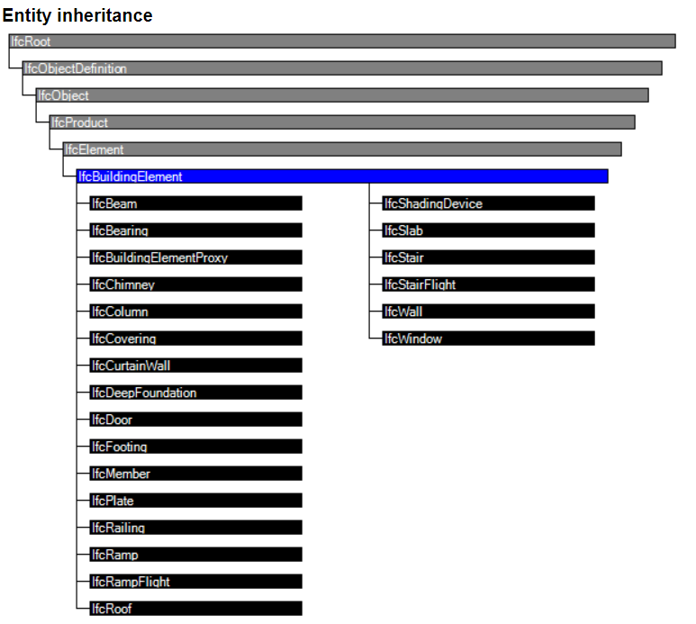

geomapi.tools
- geomapi.tools.alignmenttools
- geomapi.tools.alignmenttools.match
- geomapi.tools.alignmenttools.params
find_close_sessions()get_weighted_pose()estimate_session_position()execute_fast_global_registration()execute_global_registration()weighted_average_quaternions()calibrate_camera()
- geomapi.tools.combinationtools
- geomapi.tools.inspectiontools
- geomapi.tools.machinelearningtools
- geomapi.tools.progresstools
create_voxel_block_grid_and_raytrace()subdivide_pcd_per_box()subdivide_pcd_per_octree()pcd_to_octree()capture_image_and_depth_viewer()assign_point_cloud_information()filter_img_classifcation_by_neighbors()remap_color_images_to_masks()project_meshes_to_rgbd_images()project_pcd_to_rgbd_images()get_average_cartesian_transform_ortho()create_xy_grids()volume_mesh_BIM()volume_theoretical_BIM()calculate_completion()color_BIMNode()remove_edges_volume_calculation()color_pointcloud_by_height()create_xy_grid()get_mesh_intersections()get_bim_intersections()get_mesh_intersectionsBIM()get_scene_intersections()get_rays_raycast()get_mesh_intersection_with_grid()get_top_lineset_from_meshes()determine_percentage_of_coverage()
- geomapi.tools.validationtools
plot_pano_positions()get_heading()get_zenit()navvis_csv_to_nodes()get_boundingbox_of_list_of_geometries()match_BIM_points()compute_LOA()plot_histogram()color_point_cloud_by_LOA()color_point_cloud_by_distance()csv_by_LOA()excel_by_LOA()color_BIMNode()cad_show_lines()sample_pcd_from_linesets()get_linesets_inliers_in_box()create_selection_box_from_image_boundary_points()AlignmentPosePanoPosePanoPoseCollectionread_leica_pano_poses_xml()read_navvis_pano_poses_csv()read_navvis_alignment_xml()plot_pose_collections()plot_pose_collections_3D()decode_depthmap()get_loaclasses_from_ifcclass()get_ifcclasses_from_loaclass()create_default_loa_graph()parse_loa_excel()get_loa_class_per_bimnode()
Different tools to Manage RDF data.
- geomapi.tools.graph_to_nodes(graphPath: str = None, graph: Graph = None, subjects: List = None, **kwargs) List[Node]
Convert a graphPath to a set of Nodes.
- Args:
graphPath (str): absolute path to .ttl RDF Graph
kwargs (Any)
- Returns:
A list of pointcloudnodes, imagenodes, meshnodes, bimnodes, orthonodes with metadata
- geomapi.tools.e57xml_to_pointcloud_nodes(xmlPath: str, **kwargs) List[PointCloudNode]
- Parse XML file that is created with E57lib e57xmldump.exe.
E57 XML file structure e57Root
- >data3D
- >vectorChild
- >pose
>rotation >translation
>cartesianBounds >guid >name >points recordCount
>images2D
- Args:
path (string): e57 xml file path e.g. “D:Data2018-06 Werfopvolging Academiestraat Gentweek 22PCDweek 22 lidar_CC.xml” **kwargs: All extra arguments are applied to all nodes
- Returns:
A list of pointcloudnodes with the xml metadata
- geomapi.tools.xml_to_image_nodes(path: str, subjects: List = None, skip: int = None, filterByFolder: bool = False, **kwargs) List[ImageNode]
Parse XML file that is created with https://www.agisoft.com/.
- Args:
1.xmlPath (string or Path): xml file path e.g. “D:/Data/cameras.xml” 2.subjects (List[str]): a list of labels, matching with the camera labels, that you want filtered. 2.skip (int, Optional): select every nth image from the xml. Defaults to None. 3.filterByFolder (bool, Optional): Filter imgNodes based on the images in the folder or not. Defaults to False.
- Returns:
A list of ImageNodes with the xml metadata
- geomapi.tools.e57_to_pointcloud_nodes(e57Path, subjects=None, percentage: float = None, loadResource=False, multiProcessingTreshold=10, **kwargs) List[PointCloudNode]
- geomapi.tools.dxf_to_lineset_nodes(dxfPath: str | Path, **kwargs) List[LineSetNode]
Parse a dxf file to a list of LineSetNodes. created by CAD software
NOTE: be aware of the scale factor!
- Args:
dxfPath(str): absolute path to .dxf file
**kwargs: additional arguments to pass to the Line
- Returns:
List[LineSetNode]
- geomapi.tools.dxf_to_ortho_nodes(dxfPath: str | Path, name_filter: str = None, **kwargs) List[OrthoNode]
Parse a DXF file into a list of OrthoNode objects., created by Metashape
- Args:
dxfPath (str | Path): Path to the DXF file. name_filter (str, optional): If provided, only include entities matching this name. **kwargs: Additional arguments passed to OrthoNode.
- Returns:
List[OrthoNode]
- geomapi.tools.ifc_to_bim_nodes(path: str, classes: str = None, guids: list = None, types: List = None, getResource: bool = True, **kwargs) List[BIMNode]
Parse ifc file to a list of BIMNodes, one for each ifcElement.
NOTE: classes are not case sensitive. It is advised to solely focus on IfcBuildingElement classes or inherited classes as these typically have geometry representations that can be used by GEOMAPI.
NOTE: If you intend to parse 1000+ elements, use the multithreading of the entire file instead and filter the BIMNodes afterwards as it will be faster.
WARNING: IfcOpenShell struggles with some ifc serializations. In our experience, IFC4 serializations is more robust.
- Args:
ifcPath (string): absolute ifc file path e.g. “D:/myifc.ifc”
classes (string, optional): ifcClasses e.g. ‘IfcBeam, IfcColumn, IfcWall, IfcSlab’. Defaults to ‘IfcBuildingElement’.
- Raises:
ValueError: ‘No valid ifcPath.’
- Returns:
List[BIMNode]
- geomapi.tools.ifc_to_nodes_multiprocessing(path: str, **kwargs) List[BIMNode]
Returns the contents of geometry elements in an ifc file as BIMNodes. This method is 3x faster than other parsing methods due to its multi-threading. However, only the entire ifc can be parsed.
WARNING: IfcOpenShell strugles with some ifc serializations. In our experience, IFC4 serializations is more robust.
- Args:
ifcPath (str | Path): ifc file path e.g. “D:/myifc.ifc”
- Raises:
ValueError: ‘No valid ifcPath.’
- Returns:
List[BIMNode]
Parse Navvis csv file and return a list of PanoNodes with the csv metadata.
- Args:
csvPath (Path): csv file path e.g. “D:/Data/pano/pano-poses.csv”
skip (int, Optional): select every nth image from the xml. Defaults to None.
Path (Path, Optional): path to the pano directory. Defaults to None.
includeDepth (bool, Optional): include depth images. Defaults to True.
depthPath (Path, Optional): path to the depth images. Defaults to None.
kwargs: additional keyword arguments for the PanoNode instances
- Returns:
A list of PanoNodes with the csv metadata
- geomapi.tools.select_nodes_k_nearest_neighbors(nodes: List[Node], center: ndarray = [0, 0, 0], k: int = 10)
Select k nearest nodes based on Euclidean distance between centroids.
- geomapi.tools.select_nodes_within_radius(nodes, center, radius)
- geomapi.tools.select_nodes_within_bounding_box(nodes: List[Node], bbox: open3d.geometry.OrientedBoundingBox, margin: List[float] = [0, 0, 0]) List[Node]
Select the nodes whose centers lie inside the given bounding box.
- Args:
nodes: List of node objects. bbox: An open3d.geometry.OrientedBoundingBox (or AxisAlignedBoundingBox). margin: List of margins [u, v, w] to expand the bounding box.
- Returns:
List of nodes inside the bounding box, or None if no nodes are inside.
- geomapi.tools.select_nodes_within_convex_hull(nodes: List[Node], hull: open3d.geometry.TriangleMesh) List[Node]
Select the nodes whose centers lie inside the given convex hull.
- Args:
nodes: List of node objects. hull: An open3d.geometry.TriangleMesh representing a convex hull.
- Returns:
List of nodes inside the convex hull, or None if no nodes are inside.
- geomapi.tools.select_nodes_intersecting_bounding_box(nodes: List[Node], bbox: open3d.geometry.OrientedBoundingBox, margin: List[float] = [0, 0, 0]) List[Node]
Select the nodes whose bounding box intersects with the given bounding box.
- Args:
nodes: List of node objects. bbox: An open3d.geometry.OrientedBoundingBox. margin: List of margins [u, v, w] to expand the bounding box.
- Returns:
List of nodes whose bounding box intersects the given bounding box.
- geomapi.tools.select_nodes_intersecting_convex_hull(nodes: List[Node], hull: open3d.geometry.TriangleMesh) List[Node]
Select the nodes whose convex hull intersects with the given convex hull.
- Args:
nodes: List of node objects. hull: An open3d.geometry.TriangleMesh.
- Returns:
List of nodes whose convex hull intersects the given convex hull.
- geomapi.tools.nodes_to_graph(nodelist: List[Node], path: str = None, overwrite: bool = False, save: bool = False, base: URIRef = None) Graph
Convert list of nodes to an RDF graph.
- Args:
nodelist (List[Node])
graphPath (str, optional): path that serves as the basepath for all path information in the graph. This is also the storage location of the graph.
overwrite (bool, optional): Overwrite the existing graph triples. Defaults to False.
save (bool, optional): Save the Graph to file. Defaults to False.
- Returns:
Graph
Function to decode the depthmaps generated by the navvis processing
- Args:
None
- Returns:
np.array: Depthmap